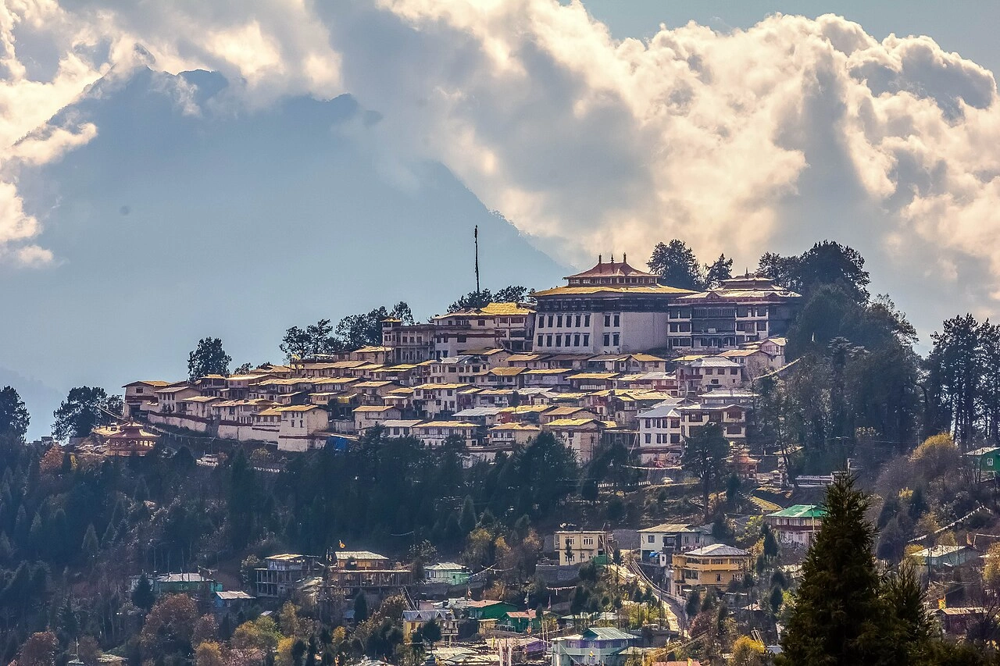
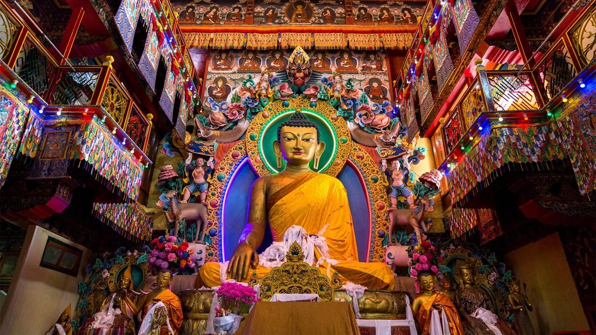

Nestled amidst the majestic Eastern Himalayas of Arunachal Pradesh, Tawang is one of the most breathtaking mountain destinations in Northeast India. Surrounded by snow-covered peaks, high-altitude lakes, ancient monasteries, waterfalls, and scenic valleys, Tawang attracts travelers seeking peace, adventure, spirituality, and raw Himalayan beauty. Located at an altitude of over 10,000 feet, Tawang is famous for its Buddhist culture, dramatic mountain roads, colorful prayer flags, and unforgettable landscapes. Whether you are planning a road trip, family vacation, bike expedition, honeymoon journey, or Northeast backpacking adventure, Tawang offers an experience unlike anywhere else in India. From snow-covered mountain passes to serene monasteries and crystal-clear lakes, Tawang promises magical Himalayan memories throughout the year.
Tawang has deep historical and spiritual importance in Tibetan Buddhism and Arunachal Pradesh. The region has been influenced by Buddhist culture for centuries and is home to the famous Tawang Monastery, which is the largest monastery in India and one of the largest Buddhist monasteries in the world. Historically, Tawang played an important role in trade routes connecting Tibet and Northeast India. The region also holds significance due to the Indo-China War of 1962, and many memorials in Tawang honor Indian soldiers who fought bravely in the harsh Himalayan terrain. Today, Tawang is known as one of India’s most scenic and culturally rich Himalayan destinations.
Tawang Monastery is the most iconic attraction in Arunachal Pradesh and one of the biggest monasteries in Asia. Perched beautifully on a hilltop overlooking the valley, the monastery offers breathtaking mountain views and peaceful spiritual surroundings. The monastery houses ancient Buddhist scriptures, giant Buddha statues, prayer halls, colorful murals, and traditional architecture that reflect Tibetan Buddhist culture.


Sela Pass is one of the most stunning high-altitude mountain passes in India located at around 13,700 feet above sea level. Covered with snow for most of the year, the pass offers breathtaking Himalayan scenery, frozen lakes, and dramatic mountain roads. The journey through Sela Pass is considered one of the most beautiful road trips in Northeast India.
Popular Experiences:
Madhuri Lake, also known as Sangetsar Lake, is a magical high-altitude lake surrounded by snow-covered mountains and dead tree trunks emerging from crystal-clear water. The lake became famous after scenes from the Bollywood movie “Koyla” featuring Madhuri Dixit were filmed here. The peaceful atmosphere and breathtaking scenery make it one of the most beautiful attractions near Tawang.
Bum La Pass is located near the Indo-China border and is one of the most adventurous places to visit near Tawang. The region offers dramatic mountain scenery, army camps, snow-covered landscapes, and a unique opportunity to witness one of India’s strategic Himalayan border areas. Special permits are required to visit Bum La Pass.
Nuranang Falls, also known as Jang Falls, is one of the most spectacular waterfalls in Arunachal Pradesh. Surrounded by dense forests and mountains, the waterfall creates a breathtaking natural setting. The waterfall becomes even more powerful during monsoon and offers excellent photography opportunities.
The Tawang War Memorial honors Indian soldiers who sacrificed their lives during the 1962 Indo-China War. The memorial offers beautiful mountain views along with emotional historical significance and patriotic atmosphere.
Panga Teng Tso (PTSO) Lake is another stunning high-altitude lake near Bum La Pass famous for crystal-clear water and peaceful Himalayan surroundings. During winter, the lake often freezes completely creating magical snowy scenery.
Tawang is a year-round Himalayan destination, but different seasons offer different experiences.
Tawang offers thrilling Himalayan adventures and scenic mountain experiences.
Tawang offers delicious Tibetan and Arunachali cuisine influenced by Himalayan culture and Buddhist traditions.
Popular dishes include:
Tawang is connected by scenic mountain roads from Guwahati, Tezpur, Bomdila, and Dirang. The road journey itself is one of the biggest highlights of the trip.
The nearest major railway station is Tezpur or Guwahati Railway Station in Assam.
The nearest airport is Tezpur Airport, while Guwahati Airport offers better flight connectivity from major Indian cities.
Planning a Tawang trip becomes smooth and memorable with Wander & Wonder Travels. Our carefully curated Arunachal Pradesh packages cover Tawang, Dirang, Bomdila, Sela Pass, Madhuri Lake, and beautiful Northeast Himalayan destinations.
Why Choose Wander & Wonder Travels?
If you are dreaming of experiencing snowfall, monasteries, lakes, mountain passes, and the untouched beauty of Arunachal Pradesh, Wander & Wonder Travels is your ideal travel partner for unforgettable Himalayan adventures.
Explore Silk Route Packages →